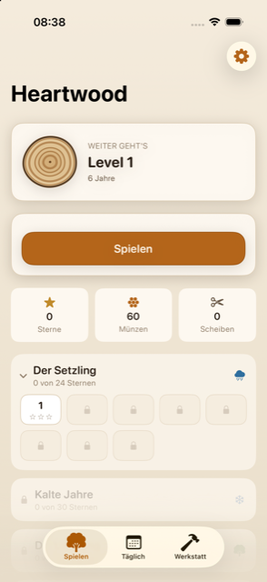
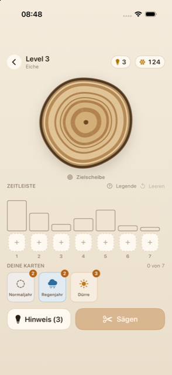
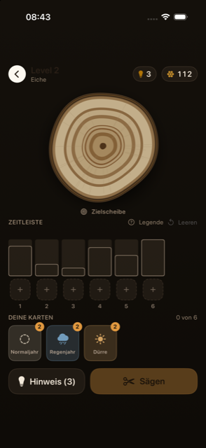
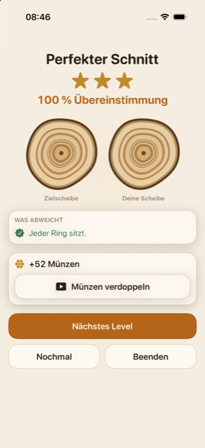
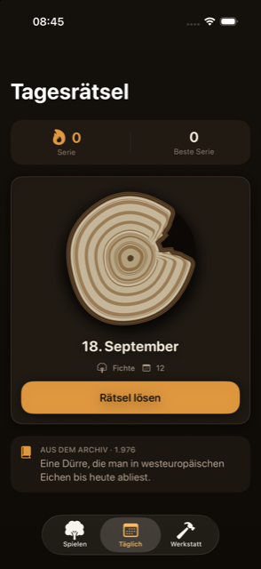
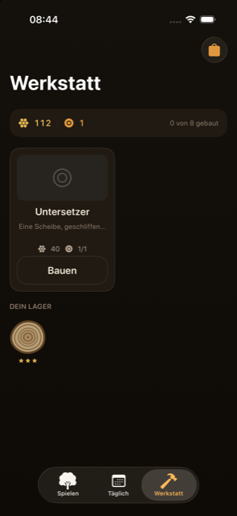

A tree grows. Every ring records what the year was like.
Ringjahr is a puzzle game about tree rings. Place climate cards on a timeline, cut the trunk, and see how close you came.
Coming to the App StoreHow it plays
Each level shows a target cross-section of a tree. You place climate cards on a timeline, cut your own trunk, and get a match percentage plus one to three stars. There are eight card types: normal year, wet year, drought, frost, wildfire, clearing, storm, and beetle year.
A round takes about 30 to 90 seconds. There is no time pressure.
The same card, a different ring
The puzzle's core idea: the same card does not produce the same ring twice. Rings narrow as the tree ages. A drought year leaves a kind of stress memory, so a second drought right after the first comes out noticeably narrower. A clearing tilts the trunk's growth over several years. A wildfire opens a wound that only closes over years.
That means you read a sequence while playing, not a lookup table.
Measuring, not guessing
Below the target slice, each ring appears as a bar. The target width is an outline, your own width is a bar inside it. When they line up, the bar turns green. No pixel-counting, no guesswork.
Gallery






78 levels across 6 chapters
- The Sapling
- Cold Years
- The Clearing
- Fire Years
- Storm and Beetle
- The Methuselah
Six wood types
Oak, spruce, pine, beech, larch, and walnut each behave differently: every wood type has its own ring behaviour you need to factor in as you read the timeline.
Daily puzzle
Every day, everyone solves the same puzzle, and you build your own streak. Each one comes with a short note on a real, documented climate year: 1540, 1601, 1709, 1816, 1947, 1976, 2003, or 2018.
Workshop
Solved cross-sections get turned into eight objects in the workshop: coaster, bowl, stool, wall clock, shelf, table lamp, table, and sculpture. All slices are drawn procedurally, not composited from images.
Accessibility
- Tap instead of drag
- VoiceOver labels
- Dynamic Type support
- Additional high-contrast mode
- Appearance set to System, Light, or Dark
Dark mode, on equal footing
Ringjahr is designed for both appearances. In dark mode, the timeline, cross-sections, and workshop are tuned on their own terms, not just inverted.
Details
- Playable offline
- No sign-in, no account
- German and English
- iOS 17 or later, iPhone and iPad